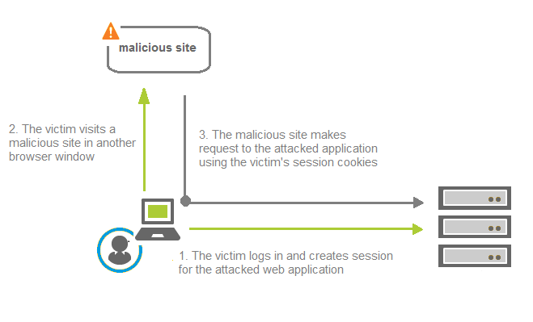

Protecting from Cross-Site Request Forgery
Cross-site request forgery (CSRF or XSRF) is also known as one-click attack or session riding. The key step of the attack is that a malicious user tricks the victim’s browser into executing an HTTP request on behalf of the valid user. As a result, a security sensitive action is performed on the server side. If the victim has already logged in the attacked site, the browser has valid session cookies and sends them automatically with subsequent requests. The server trusts these requests based on the valid cookies sent by the browser and confirms that the action has been initiated by the victim.
The predictability of the HTTP request is a prerequisite for the attacker to be able to insert a request in advance in order to make the browser execute it. Therefore, the common prevention to this attack is to embed a secret unpredictable token into the request, unique for each session or request.
The diagram that follows illustrates the CSRF process.
| CSRF Protection Mechanism | Description | When to Use | How to Use |
|---|---|---|---|
| URL encoding approach | Based on the CSRF Prevention Filter provided by
Apache Tomcat 7. The prevention mechanism is based on a token (a
nonce value) generated on each request and stored in the
session. The token is used to encode all URLs on the entry point
sites. Upon request to a protected URL, the existence and value
of the token is checked. The request is allowed to proceed only
if the nonce from the token equals the one stored in the
session. The prevention mechanism is applied for all URLs mapped
to the filter except for specially defined entry points. provided by
Apache Tomcat 7. The prevention mechanism is based on a token (a
nonce value) generated on each request and stored in the
session. The token is used to encode all URLs on the entry point
sites. Upon request to a protected URL, the existence and value
of the token is checked. The request is allowed to proceed only
if the nonce from the token equals the one stored in the
session. The prevention mechanism is applied for all URLs mapped
to the filter except for specially defined entry points. |
This is the most common CSRF protection. Use it for protecting resources that are supposed to be accessed via some sort of navigation. For example, if there is a reference to them in an entry point page (included in links/post forms, and so on). | |
| Custom header approach | Based on a secret token (a nonce value) generated on server side and stored in the session, but unlike the first approach, here the token is transported as a custom header of the HTTP requests. | Use it when URL encoding is not suitable. For example, when protecting resources that are requested only as REST APIs (one time requests that should be served independently from previous requests and are not included in links and HTML forms). The same approach is implemented in other SAP web application servers like AS ABAP and HANA XS, and is supported by SAP UI5. Common scenarios that can benefit from this approach are those using ODATA services, REST, AJAX, etc. | |
| Custom CSRF filtering implementation |
If you cannot use URL encoding or custom header protection, you can implement your custom CSRF filtering |
Use it when implementing single logout (SLO) for SAP Cloud Platform applications. Due to redirects to the SAML 2.0 identity provider, you cannot use the out-of-the-box approaches listed here (custom header protection or URL encoding. |